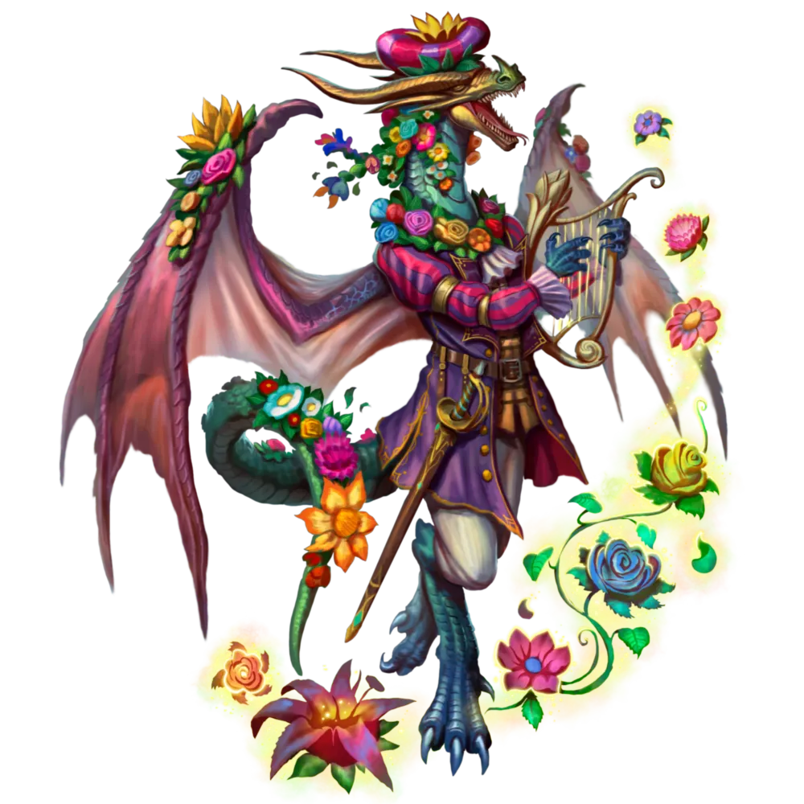

|
在众多类人种族的文化中，巨龙都是力量与强盛的象征。因此，再加上与生俱来的傲慢，巨龙往往很难承认事情出了差错。然而，有些巨龙体内奔涌着狂暴的魔法能量，这股能量一旦失控飙升，便会彻底改变它们的一生。有时，整支龙族血脉都会继承这种魔力，并在漫长的世代中延续下去。但对于这些所谓的“异类龙”而言，这股失控的能量究竟意味着什么？整个巨龙社会或许对它们不屑一顾，但它们强大的魔力却为其带来了无穷无尽的未开发潜能！ 你是一条繁花龙，出身于一脉窥探死亡彼岸的神秘学者与仪式师世系。你是莱希龙家族的一员。你的关联伤害类型为毒素，你的吐息武器为15尺锥状，需要进行体质豁免。你可以选择是否获得日光之力。 巨龙特质属性值提升。你的力量或智力值提升2点。 年龄。任何年龄段的巨龙都可以举行永恒之光仪式，因此哪怕是一条刚完成仪式的初生永光龙，严格来说也可能已经活了数千岁。不过，仪式澎湃的魔法能量会洗去衰老的痕迹。从仪式中苏醒的初生永光龙洋溢着青春活力与无限潜能。尽管部分学者持不同看法，但只要不死于暴力或其他灾祸，永光龙的寿命与传统派巨龙同样漫长。 阵营。永光龙的龙族血统会强烈影响其信念，但影响程度远不如同血统的传统派巨龙。例如，银永光龙往往是善良的捍卫者，而黑永光龙则往往狡诈刻薄。然而，永光龙深知龙脉并非不可违逆的宿命。任何永光龙都可以完全抛弃先祖的旧习，去开拓属于自己的道路。 体型。除非一条永光龙将自身魔力专注于增大体型（许多永光龙都会这样做），否则它们的体型并不会比常见的类人种族更大。你的体型可在小型或中型之间自选。 速度。你的基础步行速度为30尺。 黑暗视觉。你同样具备传统派巨龙的敏锐感官。在距离你60尺范围内，你可以将微光光照视作明亮光照，将黑暗视作微光光照。你在黑暗中无法分辨颜色，只能看到灰度的影像。 龙之馈赠。你从巨龙职业所列的龙之馈赠中获得一项龙之馈赠。如果某项馈赠具有先决条件，你必须满足其先决条件才能获得它。 龙类。你的生物种类为龙类，而非类人生物。 天生武器。除常规的徒手打击外，你还获得两种天生武器攻击：啃咬攻击与爪击攻击。你的啃咬攻击造成1d6点穿刺伤害；你的爪击攻击造成1d4点挥砍伤害。 你必须至少有一只手空闲才能发动爪击攻击。 你在进行爪击攻击的攻击检定和伤害掷骰时可以使用敏捷代替力量，但啃咬攻击不适用。 语言。你能够说、读、写通用语和龙语。 幽冥触击。你对虚体生物造成的伤害在克服该类生物对非魔法伤害的抗性或免疫时视作魔法伤害。 死灵学识。你具有奥秘技能的熟练项。每当你为回忆有关死灵术的信息而进行智力（奥秘）检定时，你可以加上双倍的熟练加值，而非正常的熟练加值。 永光繁花龙背景设定繁花龙是莱希龙中优雅而深奥的神秘学者，与灵魂的轮回以及位面间的隐秘通途息息相通。它们生机勃勃、绚丽多姿，世上没有两条完全相同的繁花龙。如虹彩般的缤纷色泽在它们身躯上倾泻流淌，五彩斑斓、闪烁微光的鳞片间盛放着绚烂的野花花簇，鲜艳的花瓣彼此交融。大多数繁花龙长着布满险恶荆刺的细长脖颈、同样修长的尾巴与纤细的四肢，有些繁花龙的头部周围还环绕着由硕大花瓣构成的巨型颈褶。 繁花龙学者对魔法与命运深深着迷。它们研究凡人灵魂从生到死再到转世的旅途――或是被从死后世界窃走、步入备受争议的不死状态（许多龙会将其形容为对轮回的扭曲，而非轮回中的一环）。它们磨砺与幽魂沟通、接触遥远界域存在的技艺，常常成为秘术的研习者与践行者。 传统派繁花龙是莱希龙中最为孤僻的一支，部分原因在于它们的嫉妒心。即便如此，它们仍会在同族间组建群落，建造宏伟的图书馆大教堂，在规模精简、制度正式的“研习家族”内部汇集彼此的研究成果。它们常在湖泊与池塘附近安家，利用这些天然水池施展探知术与其他预言魔法。大多数传统派繁花龙鄙视预言，不断质疑命运对自身的支配力；但它们却对罕见的繁花龙先知怀有极大的敬意，尊崇其对于如何全力抗争所预见未来的深刻洞见。这些信念令繁花龙对厄运龙尤为怀疑，每当那些异类龙的预言被证明不过是一知半解时，它们也毫不意外。 尽管繁花龙生性内向，且倾向于将正在进行的研究课题置于最高机密之下严加隐瞒，但一旦某个课题的研究得出结论，它们便十分乐意通过研究论文与书籍分享自己的发现。它们是高产的著述者，常将书籍与写作的作用比作自然界中的传粉者，以此确保知识的广泛传播。 虽然繁花龙常常闭门不出、独自沉浸于深奥的研究之中，但它们依然对鲜艳的色彩与华美风姿怀有深切而真挚的欣赏。对许多繁花龙而言，身上盛开的花朵是其身份认同与自我形象的根基。当繁花龙思考“美”时，它们首先想到的总是自身之美，而非精美器物与艺术品的创作或收藏。它们热衷于用色彩斑斓的衣饰与珠宝装点自己，却很少费心装饰自己的居所。 研习魔法的繁花龙往往专精于死灵技艺，无论是传统派巨龙还是永光龙，走上专精仪式施法者之路都十分常见。即便是无意亲自接受永恒之光仪式的传统派繁花龙，依然会投入漫长的时间去研究它，期望借此揭开时序魔法的隐秘奥秘。有些接受仪式的繁花龙是为了亲身研究并深入了解其内部运作机制，而另一些则是为了操控自己的灵魂、打破轮回。 顺境倦怠即便是并未研习魔法的繁花龙，也对预言魔法持有鲜明的看法；它们最常鄙视的便是算命占卜，以及一种被它们称为“顺境倦怠”的现象。许多巨龙认为，那些被预言将迎来顺遂或吉兆命运的人，往往过于盲目地相信那样的未来会自动在自己面前展开，结果沦为自身生命的旁观者，而非积极的参与者。对巨龙而言幸运的是，这类安逸的未来极其罕见，因为巨龙的一生往往充满刺激与凶险。 延伸阅读：对应怪物图鉴：繁花龙 ・ 主书通用巨龙种族特质 ・ 巨龙职业 ・ 本卷新增龙之馈赠 |
 繁花龙（Floral Dragon） |